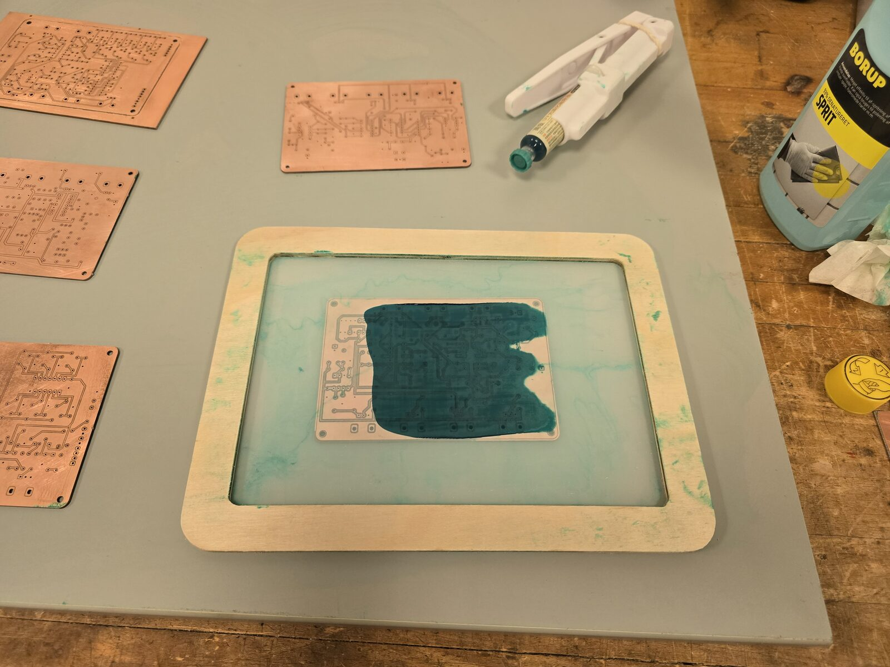
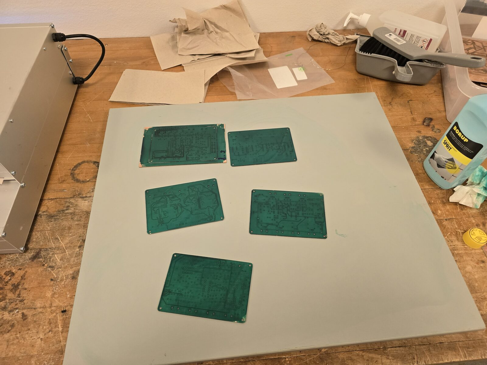
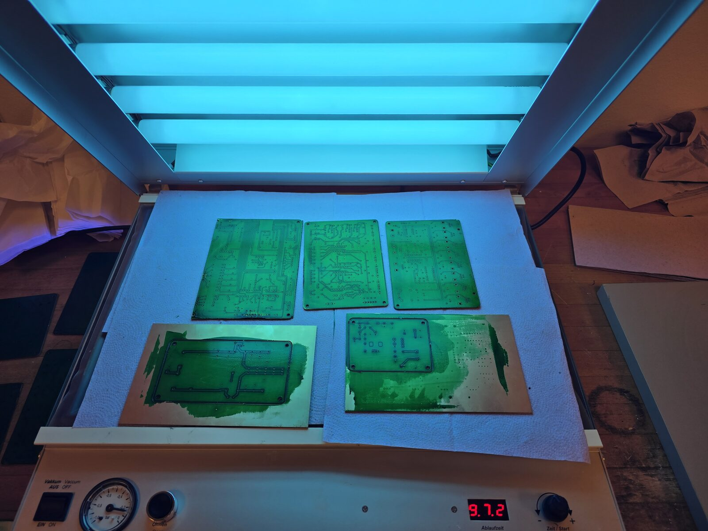
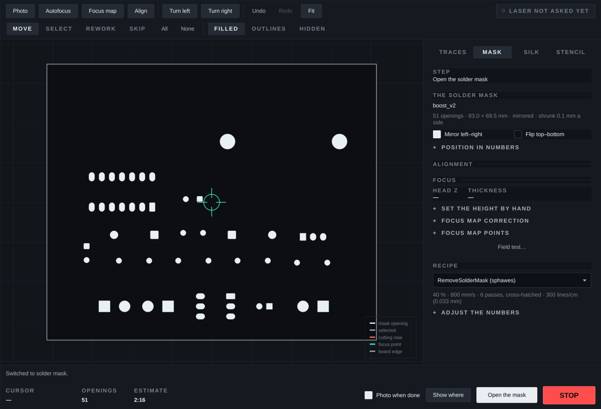

Solder mask
Cover a copper face in UV-curing ink, cure it under the big UV lamp in the student lab, and let the xTool fiber laser open the pads again. Either face can be masked: B.Mask or F.Mask. SRM-CAM lines the job up by itself: Calibrate finds the board by its drilled holes, through the ink, focuses, opens five test pads and moves the job onto their copper. No corner bracket and no xTool Creative Space.
On 22 November 2026 Mads masked the analog synth's boards this way, with Mechanic solder mask on FR-4, on both faces of the two-sided ones, and marked a silkscreen on the mask after (the finished board). The numbers here are the ones that worked there. A board of a new kind: open the five test pads and look at them before you open the rest.
What you need
| What | Where, or which |
|---|---|
| Solder mask ink | Mechanic, UV-curing |
| UV lamp | The big UV lamp in the student lab, where the boards are cut and drilled |
| Laser | The xTool F1 Ultra, plugged into the SRM-CAM PC by USB |
| Gerbers | B.Mask, and F.Mask for a board with copper on top, in the board's folder. Send to SRM-CAM plots them. The rail's Solder mask row opens on B.Mask; the Copper face switch on the laser page turns the job to F.Mask. |
| A scrap board | For the cure test and the laser test |
| Applying the ink | A transparency sheet in a wooden frame, and a squeegee (a stiff plastic card does it) |
| Cleaning and finishing | 600 grit paper, IPA, Kapton tape, a pin vise |
1 · The board first
- A laser board (the usual way): drilled and cut out on tabs on the mill, the traces etched on the laser (Make a board). It is still on its tabs, in its sheet: leave it there. The mask lines up on the same drilled holes.
- A board made on the mill alone (Mill a whole board) comes off the mill on its tabs, in its sheet, too. One extra step before you ink it, if the laser has not been calibrated on this PC today: put it on the laser, open the Traces tab and press Calibrate. It finds the board and corrects the camera; it never etches. The correction is then used for the mask.
Either way the board needs its drilled holes: they are what Calibrate finds, and the test pads are lined up on.
2 · Clean it
- SandAll over the copper face, with 600 grit.
- Blow it outThe channels and the holes. Dust left in a channel ends up under the ink.
- Wipe with IPAThen keep your fingers off the copper.
3 · Tape the other side
Cover the side you are not inking with Kapton tape, over every hole, and press it down round them. Without the tape the ink comes through the holes onto that side. A two-sided board is masked one face at a time: ink, cure and open one face, then tape that one and do the other.
4 · Apply the mask
Ink the board and a little round it. The waste of the sheet needs no ink.
- A bead of inkMechanic mask, across one end of the copper face.
- The sheet over itLay the transparency sheet, held in its wooden frame, over the board and the ink.
- Squeegee itThrough the sheet, across the board, as evenly as you can. The ink spreads under the sheet; the traces show through it.
- Look for bubblesAlong the channels above all. A bubble left in a channel is a spot with no ink.
- Lift the sheetAnd wipe the frame's sheet clean with IPA for the next board.


5 · Cure it under the big UV lamp
Take the board to the big UV lamp in the student lab. There is no cure time on this page, because it has to be found: put a scrap board under the lamp, inked the same way, and scrape the ink inside a channel on it. That is where the ink is deepest, and the last place to harden. If the top is hard and the bottom is soft, it needs longer. Then give the real board the time that worked.

6 · On the laser: Calibrate
- Sheet on the bedInked face up. Square to the bed's edges, the board near the middle (where on the bed). Close the lid.
- Open the jobClick Solder mask LASER on the rail. The laser page opens on the Mask job of B.Mask: the pad openings, mirrored like the copper and drawn 0.10 mm smaller per side. The top face is up? Set Copper face to F.Cu — top copper: the job turns to F.Mask, drawn as KiCad shows it.
- CalibratePress Calibrate. It runs three steps by itself:
- Find the board. A drilled hole shows as a dark dot through the ink. Under ink many holes are part filled and read pale, so the board is found when 55 % of its holes match, in any quarter turn.
- Autofocus on the ink, and a new photo at that height.
- Test pads. It opens five pads, one near each corner and one in the middle, each with a drilled hole. It photographs them before and after, finds each pad's copper (its ring and its hole) round the burnt opening, and moves and turns the job by what they show. The camera is corrected by the same amount, so the next board's search starts closer.
- Look at the test padsWith Outlines on, so the photo shows through: each pad should be bare copper with an even rim of ink round it (reading the rims).
The line-up happens once. After a test fire the tick Line up on this test fire clears itself, so a check or rework of a few selected pads never moves the job again. Ctrl+Z takes the move back. To line up again on pads of your own choosing, tick it, select two to twelve pads with holes, and open them.

- Why smaller: a small error then leaves ink on the pad's edge, not bare copper beside it. A pad too small to survive the shrink stays under the ink, and the page says which.
- The recipe is RemoveSolderMask · concentric rings: fiber, 40 %, 800 mm/s, 30 kHz, 300 lines/cm, 4 passes of rings drawn pad by pad, from each opening's edge inwards, every other pass set half a step in. Four passes go through the ink to clean copper, in about a third of the hatch's time. Adjust the numbers shows it; its Fill list has the old way too, RemoveSolderMask (sphawes, hatch): 6 cross-hatched passes of lines across the whole board.
The camera can't find the holes (ink in all of them, a board with few)? Drag the job close, Select a few pads and press Show 3 in blue: the blue diode runs round just those, fast, for about 20 seconds, as xTool Creative Space frames. Open the lid to see it. Nudge with the arrow keys (0.1 mm a press) and show again. Align on the photo still works too.
Keep the lid closed while it fires, and the fumes vented outdoors. STOP, or Esc from any page, stops it, and puts the blue diode out.
7 · Reading the test pads
Look at the rim of ink round each test pad:
- Even rimsLined up. Go on.
- Thick on one side, the same on allA shift. Nudge the job with the arrow keys (0.1 mm a press) towards the thin side.
- Different on eachA turn, or a board that moved: check it did not, tick Line up on this test fire and open a few more pads.
- Copper still hazyNot a line-up problem: the ink was thick there. Select the pad and open it again.
8 · Open the rest
None clears the selection (Calibrate leaves it clear), so the run does the whole face: press Open the mask. Don't move the board before you have looked at it: a board that has not moved can simply be run again over the hazy pads (select them, and open just those).
Save the files… also writes <name>_mask_mirrored.dxf (openings on layer MASK_OPENINGS, outline on OUTLINE, mm at 1:1, already mirrored) for xTool Creative Space. There you place it by hand, with sphawes's corner bracket and a scored outline. SRM-CAM's Calibrate replaces all of that.
9 · Then the silkscreen and the finish
- Wipe with IPAThe copper face, while the board is still in its sheet.
- The other faceA two-sided board: tape this face, and ink, cure and open the other.
- Peel the tape
- Silkscreen, if you want itOn the mask ink of the top face, with a light recipe that lightens the ink: Silkscreen.
- Break the tabsOnly now, when the laser is done with the board.
- Clear the holesWith a pin vise, from the copper face.
- Check itContinuity across the board, and tin a few pads: solder that will not take means ink is still on the pad.

The whole order, mill included: Make a board: the finish. Mask misaligned, or pads still hazy: Troubleshooting.
Where this comes from
This adapts sphawes/fiber-laser-pcb-fab, which makes whole boards on a fiber laser, into the workflow here: the mill drills and cuts out, and the laser etches the copper and opens the mask, lined up on the drilled holes. The RemoveSolderMask hatch preset is his; the concentric rings are its numbers drawn pad by pad. The drawings on this page were made for this guide.